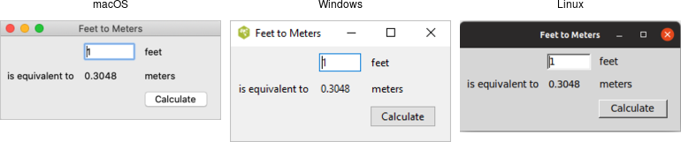
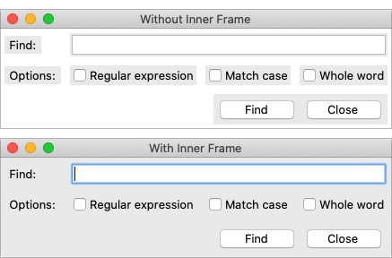

A First (Real) Example
With that out of the way, let's try a slightly more substantial example, which will give you an initial feel for what the code behind a real Tk program looks like.
Design
We'll create a simple GUI tool to convert a distance in feet to the equivalent distance in meters. If we were to sketch this out, it might look something like this:

A sketch of our feet to meters conversion program.
So it looks like we have a short text entry widget that will let us type in the number of feet. A "Calculate" button will get the value out of that entry, perform the calculation, and put the result in a label below the entry. We've also got three static labels ("feet," "is equivalent to," and "meters"), which help our user figure out how to work the application.
The next thing we need to do is look at the layout. The widgets that we've included seem to be naturally divided into a grid with three columns and three rows. In terms of layout, things seem to naturally divide into three columns and three rows, as illustrated below:

The layout of our user interface, which follows a 3 x 3 grid.
Code
Now here is the Python code needed to create this entire application using Tkinter.
from tkinter import *
from tkinter import ttk
def calculate(*args):
try:
value = float(feet.get())
meters.set(int(0.3048 * value * 10000.0 + 0.5)/10000.0)
except ValueError:
pass
root = Tk()
root.title("Feet to Meters")
mainframe = ttk.Frame(root, padding="3 3 12 12")
mainframe.grid(column=0, row=0, sticky=(N, W, E, S))
root.columnconfigure(0, weight=1)
root.rowconfigure(0, weight=1)
feet = StringVar()
feet_entry = ttk.Entry(mainframe, width=7, textvariable=feet)
feet_entry.grid(column=2, row=1, sticky=(W, E))
meters = StringVar()
ttk.Label(mainframe, textvariable=meters).grid(column=2, row=2, sticky=(W, E))
ttk.Button(mainframe, text="Calculate", command=calculate).grid(column=3, row=3, sticky=W)
ttk.Label(mainframe, text="feet").grid(column=3, row=1, sticky=W)
ttk.Label(mainframe, text="is equivalent to").grid(column=1, row=2, sticky=E)
ttk.Label(mainframe, text="meters").grid(column=3, row=2, sticky=W)
for child in mainframe.winfo_children():
child.grid_configure(padx=5, pady=5)
feet_entry.focus()
root.bind("<Return>", calculate)
root.mainloop()
As we'll see in the next chapter, there's another, more object-oriented way to do exactly the same thing. Are we surprised?
And the resulting user interface:

Screenshot of our completed feet to meters user interface.
A Note on Coding Style
Each of the languages included in this tutorial has a variety of coding styles and conventions available to choose from, which help determine conventions for variable and function naming, procedural, functional or object-oriented styles, and so on.
Because the focus on this tutorial is Tk, this tutorial will keep things as simple as possible, generally using a very direct coding style, rather than wrapping up most of our code in procedures, modules, objects, classes and so on. As much as possible, you'll also see the same names for objects, variables, etc. used across the languages for each example.
Step-by-Step Walkthrough
Let's take a closer look at that code, piece by piece. For now, all we're trying to do is get a basic understanding of the types of things we need to do to create a user interface in Tk, and roughly what those things look like. We'll go into details later.
Incorporating Tk
Our program starts by incorporating Tk.
from tkinter import * from tkinter import ttk
These two lines tell Python that our program needs two modules. The first, tkinter, is the
standard binding to Tk. When imported, it loads the Tk library on your system.
The second, ttk, is a submodule of tkinter. It implements Python's binding to the
newer "themed widgets" that were added to Tk in 8.5.
Notice that we've imported everything (*) from the tkinter module. That way, we can call tkinter functions etc. without
prefixing them with the module name. This is standard Tkinter practice.
However, because we've imported just ttk
itself, we'll need to prefix anything inside that submodule. For example, calling Entry(...)
would refer to the Entry class inside the tkinter module (classic widgets). We'd need ttk.Entry(...) to use the Entry class inside ttk (themed widgets).
As you'll see, several classes are defined in both modules.
Sometimes you will need one or the other, depending on the context. Explicitly requiring the ttk prefix facilitates this, and will be the style used
in this tutorial.
Setting up the Main Application Window
Next, the following code sets up the main application window, giving it the title "Feet to Meters."
root = Tk()
root.title("Feet to Meters")
Creating a Content Frame
Next, we create a frame widget, which will hold the contents of our user interface.
mainframe = ttk.Frame(root, padding="3 3 12 12") mainframe.grid(column=0, row=0, sticky=(N, W, E, S)) root.columnconfigure(0, weight=1) root.rowconfigure(0, weight=1)
After the frame is created, grid places it directly inside our main application window.
The columnconfigure/rowconfigure bits tell Tk that the frame should expand to fill any extra space
if the window is resized.
Why do we put a frame inside the main window? Strictly speaking, we could just put the other widgets in our interface directly into the main application window, without the intervening content frame. That's what you'll see in older Tk programs.
However, the main window isn't itself part of the newer "themed" widgets. Its background color doesn't match the themed widgets we will put inside it. Using a "themed" frame widget to hold the content ensures that the background is correct. This is illustrated below.

Placing a themed frame inside a window.
On macOS, where this problem is most prominent, you can also set the window's background color (via its background
configuration option) to the predefined color systemWindowHeaderBackground.
Creating the Entry Widget
The first widget we'll create is the entry where we can input the number of feet that we want to convert.
feet = StringVar() feet_entry = ttk.Entry(mainframe, width=7, textvariable=feet) feet_entry.grid(column=2, row=1, sticky=(W, E))
We need to do two things: create the widget itself, and then place it onscreen.
When we create a widget, we need to specify its parent, which is the widget that this widget will be placed inside.
In this case, we want our entry placed inside the content frame. Our entry, and other widgets we'll create shortly, are said to be
children of the content frame. In Tcl and Perl, the widget name is used to specify the parent-child relationship, i.e. .c.feet is a child of .c. In Python and Ruby, the parent is passed as the first parameter when instantiating a widget object.
When we create a widget, we can optionally provide it with certain configuration options.
Here, we specify how wide we want the entry to appear, i.e. 7 characters.
We also assign it a mysterious textvariable; we'll see what that does shortly.
When widgets are created, they don't automatically show up on the screen, because Tk doesn't know
how you want them to be placed relative to other widgets. That's what the grid part does.
Remember the layout grid when we sketched out our application? Widgets are placed in the appropriate
column (1, 2, or 3), and row (also 1, 2, or 3).
The sticky option to grid describes how the widget should
line up within the grid cell, using compass directions. So w (west) means to anchor the widget
to the left side of the cell, we (west-east) means to attach it to both the left and right sides,
and so on. Python also defines constants for these directional strings, which you can provide as a list, e.g. W or (W, E).
Creating the Remaining Widgets
We then do exactly the same thing for the remaining widgets. We have one label that will display the resulting number of meters that we calculate. We have a "Calculate" button that is pressed to perform the calculation. Finally, we have three static text labels to make it clear how to use the application. For each of these widgets, we first create it and then place it onscreen in the appropriate cell in the grid.
meters = StringVar() ttk.Label(mainframe, textvariable=meters).grid(column=2, row=2, sticky=(W, E)) ttk.Button(mainframe, text="Calculate", command=calculate).grid(column=3, row=3, sticky=W) ttk.Label(mainframe, text="feet").grid(column=3, row=1, sticky=W) ttk.Label(mainframe, text="is equivalent to").grid(column=1, row=2, sticky=E) ttk.Label(mainframe, text="meters").grid(column=3, row=2, sticky=W)
Adding Some Polish
We then put a few finishing touches on our user interface.
for child in mainframe.winfo_children():
child.grid_configure(padx=5, pady=5)
feet_entry.focus()
root.bind("<Return>", calculate)
The first part walks through all of the widgets that are contained within our content frame,
and adds a little bit of padding around each, so they aren't so scrunched together.
(We could have added these options to each grid call when we first put the widgets
onscreen, but this is a nice shortcut.)
The second part tells Tk to put the focus on our entry widget. That way, the cursor will start in that field, so users don't have to click in it before starting to type.
The third line tells Tk that if a user presses the Return key (Enter on Windows) it should call our calculate routine, the same as if they pressed the Calculate button.
Performing the Calculation
Speaking of which, here we define our calculate procedure. It's called when a user presses the Calculate button or hits the Return key. It performs the feet to meters calculation.
def calculate(*args):
try:
value = float(feet.get())
meters.set(int(0.3048 * value * 10000.0 + 0.5)/10000.0)
except ValueError:
pass
As you can clearly see, this routine takes the number of feet from our entry widget, does the calculation, and places the result in our label widget.
Say what? It doesn't look like we're doing anything with those widgets! Here's where
the magic textvariable options we specified when creating the widgets come into play.
We specified the global variable feet as the textvariable for the entry, which means
that anytime the entry changes, Tk will automatically update the global variable feet.
Similarly, if we explicitly change the value of a textvariable associated with a widget
(as we're doing for meters which is attached to our label), the widget will automatically
be updated with the current contents of the variable.
For Python, the only caveat is that these variables must be an instance of the StringVar class.
Slick.
Start the Event Loop
Finally, we need to tell Tk to enter its event loop, which is necessary for everything to appear onscreen and allow users to interact with it.
root.mainloop()
What's Missing
We've now seen how to create widgets, put them onscreen, and respond to users interacting with them. It's certainly not fancy, could probably do with some error checking, but it's a fully-functional GUI application.
It's also worth examing what we didn't have to include in our Tk program to make it work. For example:
- we didn't have to worry about redrawing the screen as things changed
- we didn't have to worry about parsing and dispatching events, hit detection, or handling events on each widget
- we didn't have to provide a lot of options when we created widgets; the defaults seemed to take care of most things, and so we only had to change things like the text the button displayed
- we didn't have to write complex code to get and set the values of simple widgets; we just attached them to variables
- we didn't have to worry about what happens when users close the window or resizes it
- we didn't need to write extra code to get this all to work cross-platform
One More Thing...
As this tutorial emphasizes Tkinter, our examples use standalone script code, global variables, and simple functions. In practice, you'll likely organize anything beyond the simplest scripts in functions or classes. There are different ways to do this: using modules, creating classes for different parts of the user interface, inheriting from Tkinter classes, etc.
Often though, you just want to do something simple to encapsulate your data rather than putting everything into the global variable space. Here is the
feet to meters example, rewritten to encapsulate the main code into a class. Note the use of self on callbacks (which execute at the global scope)
and StringVar's.
from tkinter import *
from tkinter import ttk
class FeetToMeters:
def __init__(self, root):
root.title("Feet to Meters")
mainframe = ttk.Frame(root, padding="3 3 12 12")
mainframe.grid(column=0, row=0, sticky=(N, W, E, S))
root.columnconfigure(0, weight=1)
root.rowconfigure(0, weight=1)
self.feet = StringVar()
feet_entry = ttk.Entry(mainframe, width=7, textvariable=self.feet)
feet_entry.grid(column=2, row=1, sticky=(W, E))
self.meters = StringVar()
ttk.Label(mainframe, textvariable=self.meters).grid(column=2, row=2, sticky=(W, E))
ttk.Button(mainframe, text="Calculate", command=self.calculate).grid(column=3, row=3, sticky=W)
ttk.Label(mainframe, text="feet").grid(column=3, row=1, sticky=W)
ttk.Label(mainframe, text="is equivalent to").grid(column=1, row=2, sticky=E)
ttk.Label(mainframe, text="meters").grid(column=3, row=2, sticky=W)
for child in mainframe.winfo_children():
child.grid_configure(padx=5, pady=5)
feet_entry.focus()
root.bind("<Return>", self.calculate)
def calculate(self, *args):
try:
value = float(self.feet.get())
self.meters.set(int(0.3048 * value * 10000.0 + 0.5)/10000.0)
except ValueError:
pass
root = Tk()
FeetToMeters(root)
root.mainloop()